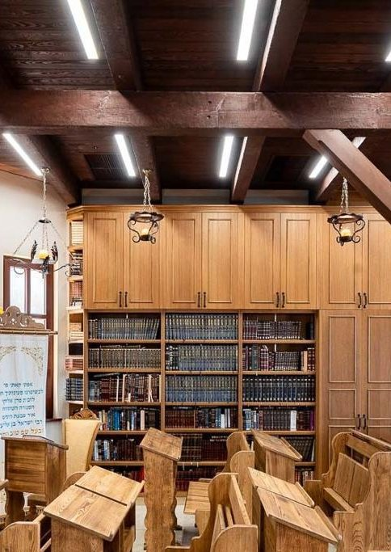
It is a unique and moving undertaking: the complete restoration of the furniture inside the ancient synagogue of the Baal Shem Tov, in the small Ukrainian town of Medzhybizh. Through masterful joinery and deep historical research, the workshop of AMUD Legacy Synagogue Interiors brought back to life the spirit of one of the holiest sites in the Jewish world.
A restoration project of this complexity demanded deep professional knowledge, patience, and precision. The AMUD team worked over many months to rebuild the furniture and architectural elements of the sanctuary — taking great care with every single detail, from the joinery of the ceiling beams to the carving on the Aron Kodesh.
The Original Beit Midrash of the Baal Shem Tov
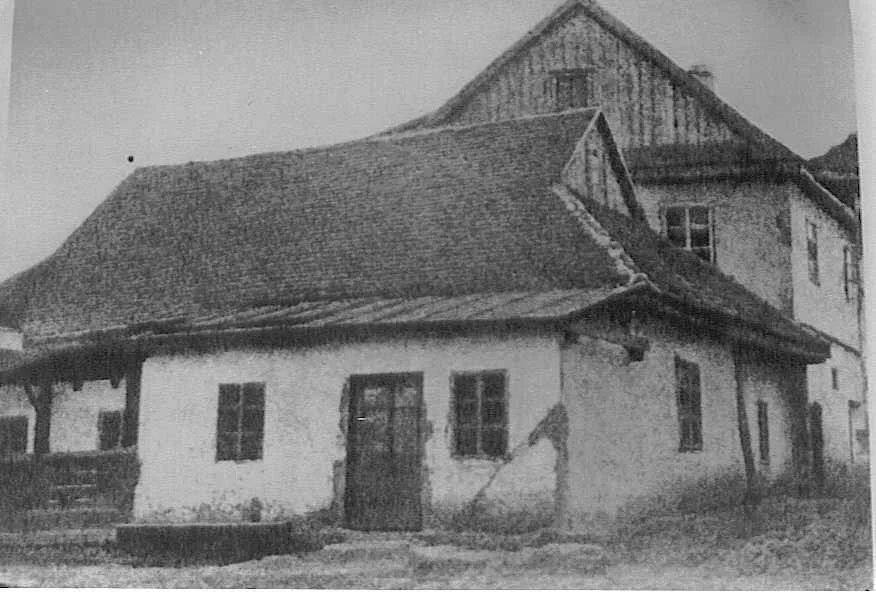
Rabbi Yisrael ben Eliezer, known as the Baal Shem Tov (the "Besht"), founder of the Chassidic movement, settled in Medzhybizh, Ukraine, around 1740 and lived there until his passing in 1760. There he established his beit midrash, and Medzhybizh became the center of the emerging Chassidic movement.
The original beit midrash building did not survive the twentieth century intact: it was confiscated during the Soviet era and used first as a bank and later as a fire station. The building's full restoration was completed in 2004, on the festival of Shavuot — the Besht's yahrzeit — in the presence of rabbis and Chassidim from around the world.
Today, Medzhybizh is a major pilgrimage destination in the Jewish world. Thousands of Chassidim travel there every year, especially around the days of the yahrzeit, to pray in the room where the Baal Shem Tov himself once stood.
What Was Restored
Aron Kodesh · Bimah · Libraries & bookcases · Tables & benches · Ceiling beams & partitions · Exterior fence
The Aron Kodesh
At the heart of the project stood the creation of two Aron Kodesh cabinets, identical in scale and design to those that originally stood in the sanctuary. The arks are finished with delicate carving and historical detailing, and they now form the visual and spiritual center of the restored synagogue.
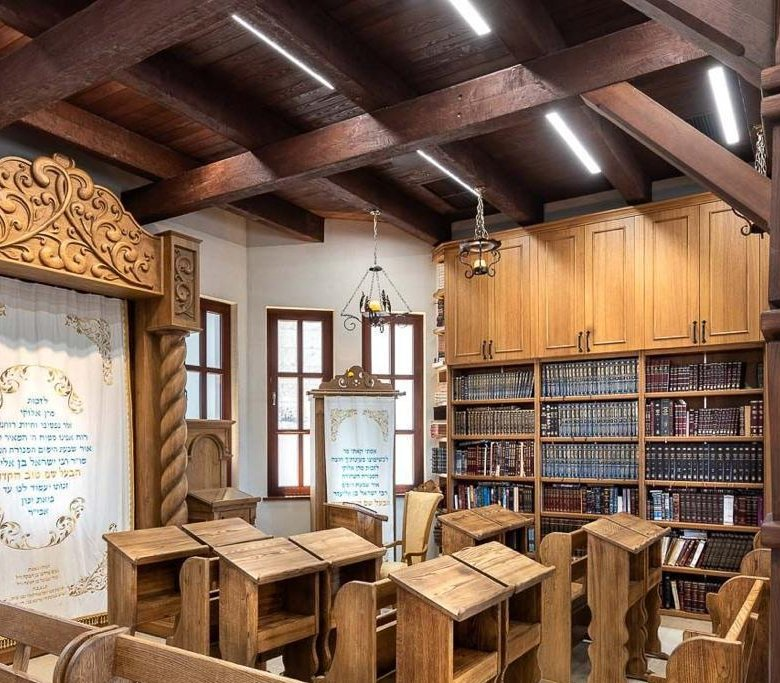
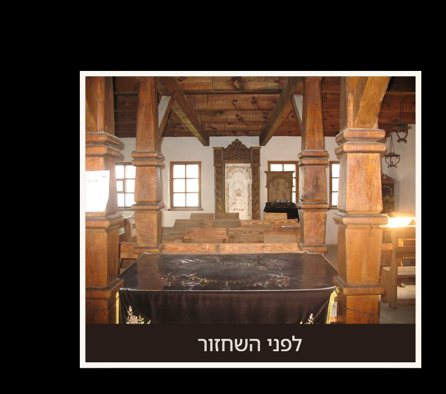
Bimah, Ceiling Beams & Partitions
The AMUD team built a special bimah, connected to the building's four central columns and designed in the spirit of the original. The ceiling beams and wooden partitions were rebuilt to match the historic carpentry, restoring the sanctuary's original character down to the joinery details — the same heavy timber crossbeams and turned columns visible in the archival photographs.
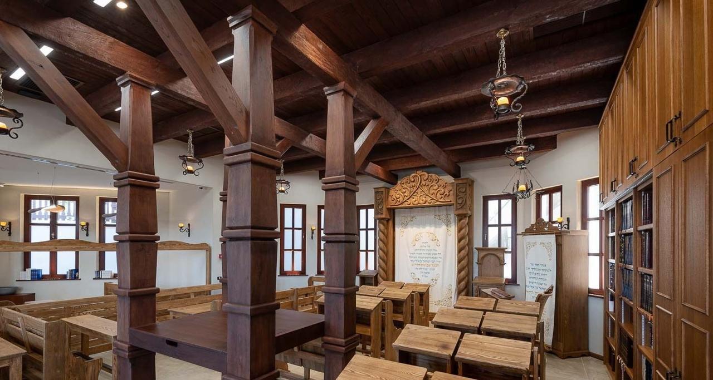
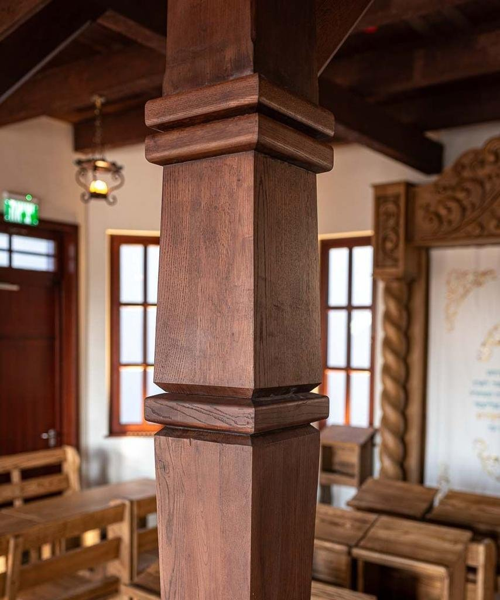
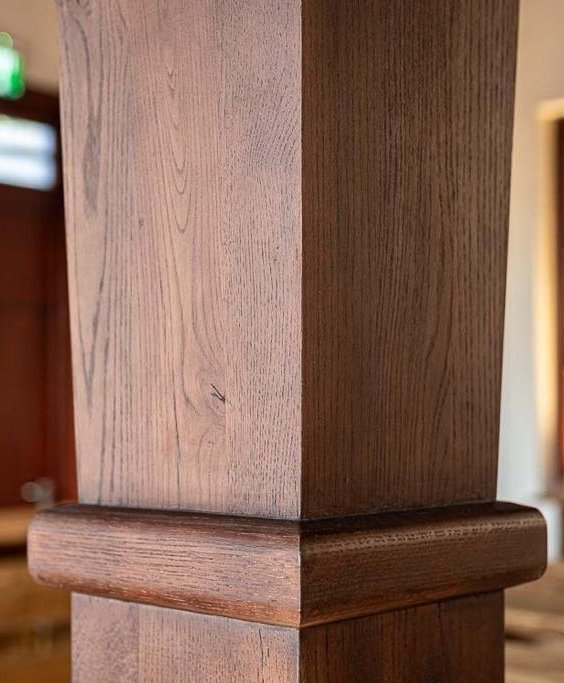
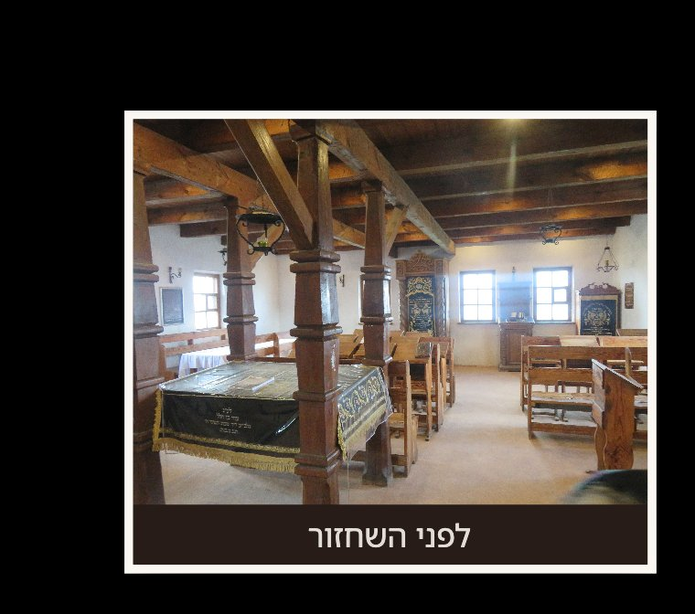
Memorial Boards & Donor Recognition by Shtern Amber
Whether your community is restoring a historic sanctuary or commissioning new furniture, Shtern Amber offers handcrafted memorial boards and donor dedication plaques built to the same standard of craftsmanship. Honor the families who help fund a project like this with engraved Yahrzeit boards designed specifically for synagogue interiors.
Explore Memorial Boards →Tables & Benches
The tables and benches were rebuilt to match those that once stood in the original synagogue. The furniture is crafted from solid, high-quality wood and finished in a classic antique style consistent with the rest of the sanctuary — including a rebuilt shtender for the amud, set beneath a portrait of the Baal Shem Tov.
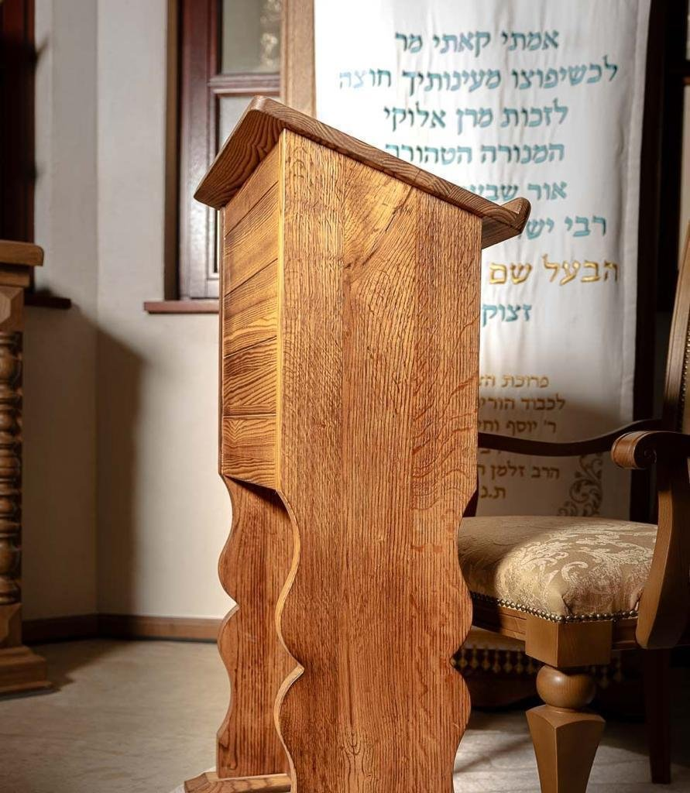
The Libraries
Antique bookcases in an Eastern European style were rebuilt to house the sanctuary's holy books. Like the rest of the furniture, the libraries are crafted from solid, high-quality wood, sized and detailed to match the character of the originals that once lined the walls of the beit midrash.
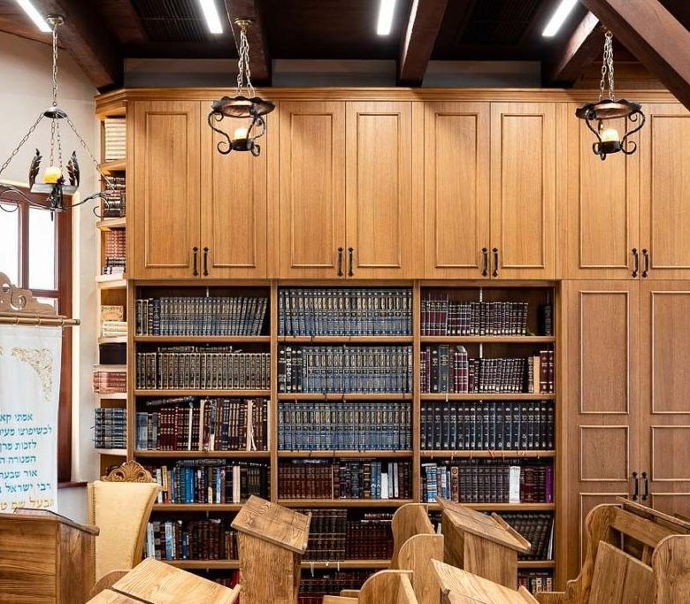
Carved & Cast Details
Beyond the major furniture pieces, the restoration extended to the smaller decorative elements that give the sanctuary its character: wrought-iron chandeliers and hand-carved wooden corbels supporting the ceiling beams, each reproduced to match fragments and photographs of the originals.
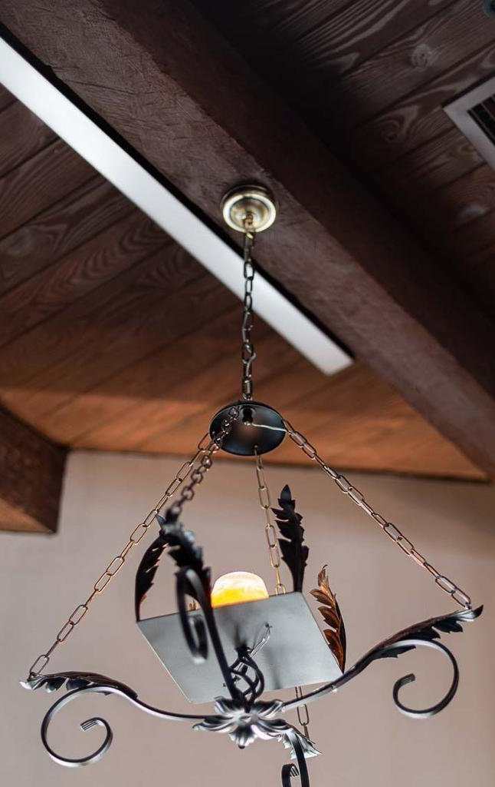
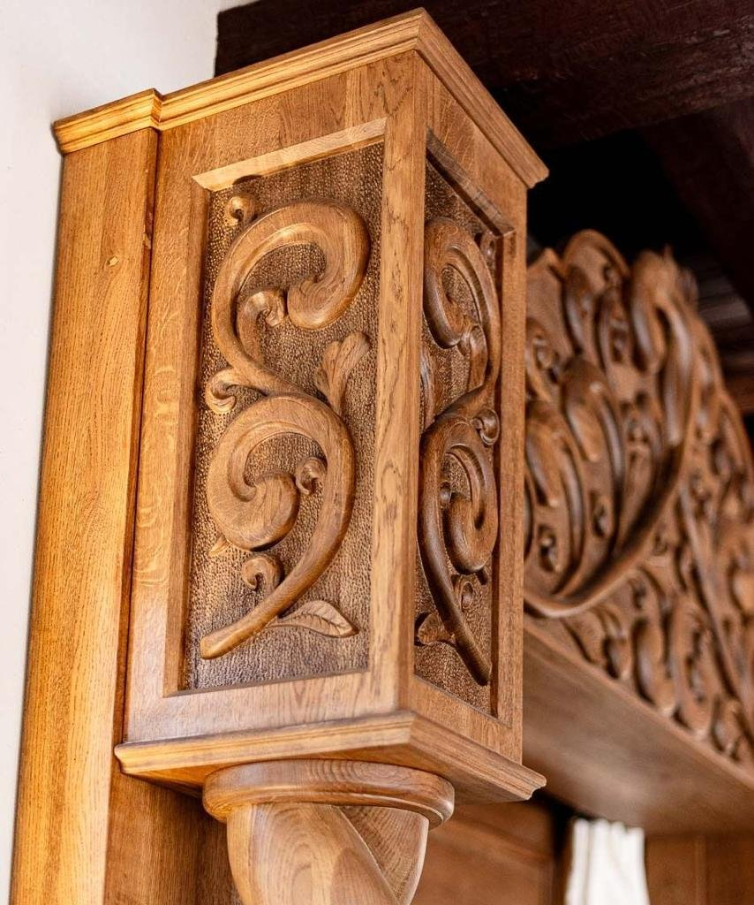
Why This Project Matters
Medzhybizh is not a museum piece. It is a living sanctuary that thousands of Chassidim visit every year, most heavily around the Besht's yahrzeit on Shavuot. A restoration here is not only a craftsmanship exercise — it is an act of continuity, giving each new generation of visitors a room that looks and feels the way it did when the Baal Shem Tov himself taught there.
From the Aron Kodesh to the smallest carved corbel, the AMUD project treated every element of the sanctuary as part of a single historical object worth restoring with precision — solid wood, hand carving, and construction methods chosen to match, rather than modernize, what stood there before.